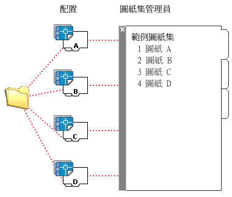
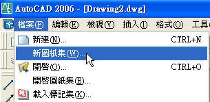
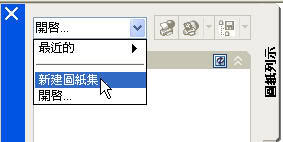
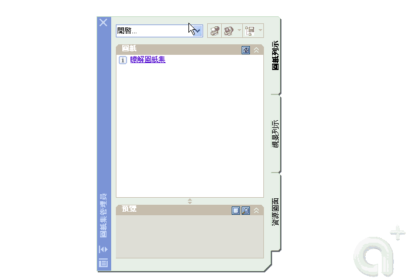

目前使用心得：對於工作上非常有幫助，快速開啟專案所有相關檔案，並快速出圖、發佈(出版)和電子傳送，這已逕是管理階層的領域了，有效運用圖紙集的功能真的很有幫助！
圖紙集用於大型專案的圖面管理非常有效率，當將圖面集組合在一起組織圖面後，即可快速選取圖面進行出版(發佈)圖面，也可電子傳送將相關從屬檔案完整封包。
還可透過圖紙集將圖面作為一個單位來管理、傳送、出版以及封存。但是此革命性的功能鮮少人使用真的很可惜。
你可先到AutoCAD的新功能介紹對圖紙集快速入門，再經由範例演練加深其印象，所以很難從文字上來表達，有問題請再提～
圖紙集快速入門
圖紙集是AutoCAD 2005的新功能，是屬於管理階層的功能，用於大型專案的圖面管理非常有效率，當將圖面集組合在一起組織圖面後，即可快速選取圖面進行出版(發佈)圖面，也可電子傳送將相關從屬檔案完整封包。還可透過圖紙集將圖面作為一個單位來管理、傳送、出版以及封存。

※圖紙集只適用於圖紙(配置)空間。
有效率地管理圖紙集
新的管理圖紙集、檢視與圖層工具，超越單一圖面的生產力。使用新的「圖紙集管理員」，您可以將圖紙進行邏輯分類，以及同時將新圖與既有圖面組合成圖紙集。讓您的團隊成員同時存取區域網路內的圖紙集。而且，您還可以將圖紙標準快速地傳播到多個專案，並且輕鬆地從舊版本取回資訊。

建立新的圖紙集的方式
1.「插入」功能表：「檔案」「新建圖紙集」

2.「工具」功能表：「精靈」「新建圖紙集」

3.「圖紙集管理員」控制：「新建圖紙集」

※並可分為使用 範例圖紙集 或是 既有圖面 來新增圖紙集，以下展示2種方式:
1.範例圖紙集方式:

2.既有圖面方式:

延伸閱讀：